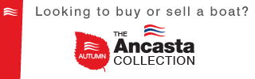

Nuestros primeros 50 años de historia
En el marco de los festejos por el cincuentenario, el 15 de agosto de 2011, fecha de constitución de nuestra cooperativa en el año 1961, realizamos el acto central en el cual repasaremos estos primeros 50 años de historia.
En el evento, además de disfrutar de la Orquesta Escuela de los Andes, quien tuvo a cargo la apertura formal del mismo, se distribuyó un Brochure que resume y contiene la historia viva de nuestra entidad; compartimos un video institucional; y repasamos las distintas gestiones que permitieron que COTESMA, 50 años después de su fundación, sea una empresa cooperativa eficiente, pujante y con un fuerte perfil solidario, comprometida con el desarrollo y crecimiento de su comunidad. La Jornada finalizará con la inauguración de una muestra fotográfica en la Sala Gunther Blaas.
Agradecemos la participación de dichos festejos a todos nuestros asociados, clientes y comunidad en general.
Feliz aniversario para todos.
"COTESMA, 50 AÑOS COMUNICANDO VALORES”
Este Programa abarca actividades tendientes a la creación de cooperativas, a partir del desarrollo de conferencias, talleres y tutorías técnicas.
Su principal objetivo es promover la creación, desarrollo y crecimiento de empresas de carácter solidario, poniendo en práctica los valores de la solidaridad, ayuda mutua, equidad y democracia, contribuyendo así a la creación de fuentes de trabajo genuinas, y fomentando el desarrollo de nuevos sectores económicos dentro de nuestra localidad. Para eso se capacitará y asesorará a determinados grupos ya constituidos, o por constituirse, que posean un saber hacer específico, oficio o profesión que los agrupe, y que lo quieran materializar o ejercer, mediante la constitución de una cooperativa.
Desarrollo del Programa.
El programa esta a cargo de un profesional especializado en temas cooperativos y se desarrolla en tres etapas que se van implementando a partir de la evolución de los diferentes grupos en cuanto a su desarrollo como equipo, conocimientos adquiridos, factibilidad técnica del proyecto, etc. Más información: Lic. Leandro Miret, responsable del Programa de RSCoop. de COTESMA, leandromiret@gmail.com.

Un concurso de realización de videos audiovisuales con contenido cooperativo a cargo de alumnos de 5° y 6° año
En el marco de los festejos por el Año Internacional de las Cooperativas declarado por las Naciones Unidas (NU), y como parte de las acciones planificadas dentro del Programa de Responsabilidad Social Cooperativa (RSCoop) que lleva adelante la cooperativa, COTESMA, con el auspicio de OSDE, TECHNOLOGY BUREAU, DMC y COMUNITEL, organiza el Concurso “CoopArte” de realización de videos audiovisuales con contenido cooperativo a cargo de los alumnos de 5° y 6° año de todos los colegios públicos y privados de nuestra localidad.
La finalidad del concurso es que los alumnos se interioricen, investiguen e indaguen sobre la filosofía y práctica de la cooperación, y en función de dicha investigación, produzcan por sí mismos y de manera cooperativa, un video a través del cual se promueva el espíritu cooperativo, sus valores y principios, buscando concientizar sobre la importancia del sistema cooperativo como una herramienta asociativa que contribuye en la construcción de un mundo mejor, más justo y solidario.

Desde 1923, el primer sábado de julio de cada año se celebra el Día internacional de la Cooperación
Es este día por recomendación de la Alianza Cooperativa Internacional (ACI), que consideró propicio instituir una jornada de propagación de la solidaridad entre miembros de una organización o sociedad, capaz de alcanzar la emancipación económica a través de su propia eficiencia.